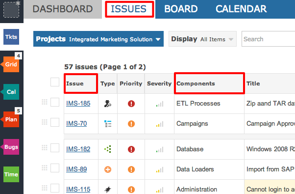
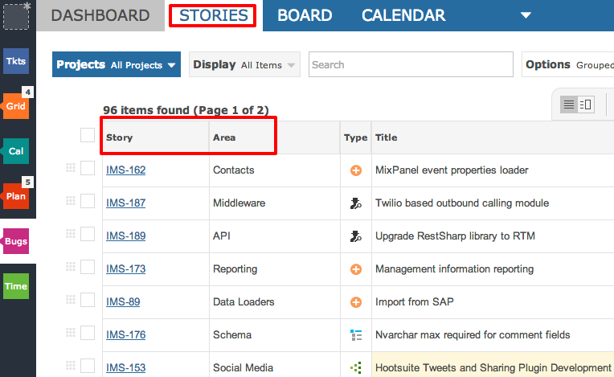

Different departments and teams can work and speak in their own way. Team terminology is fully supported allowing each project to be tailored to the team. The following project is using taxonomy suited to issue tracking projects.

The following project is using taxonomy suited to Agile projects such as Scrum.

The following video will provide greater detail into Taxonomy, and how it relates directly with your project templates.